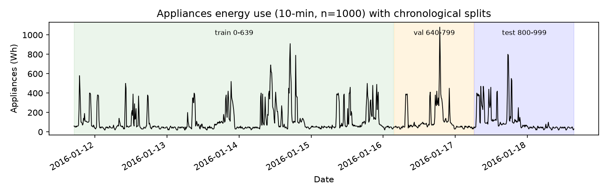
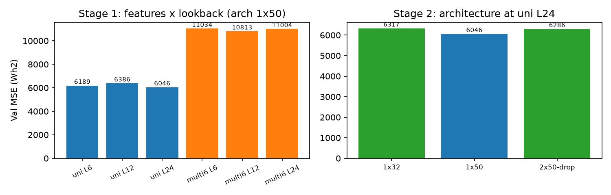
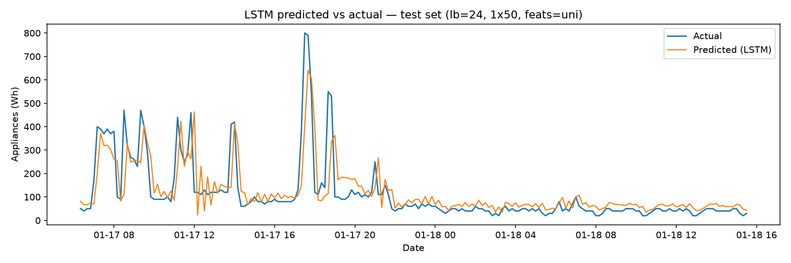
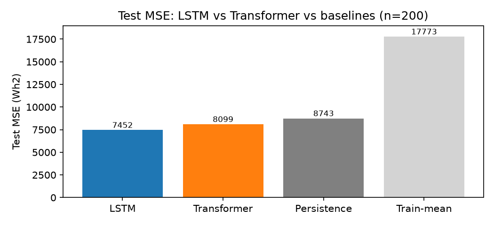
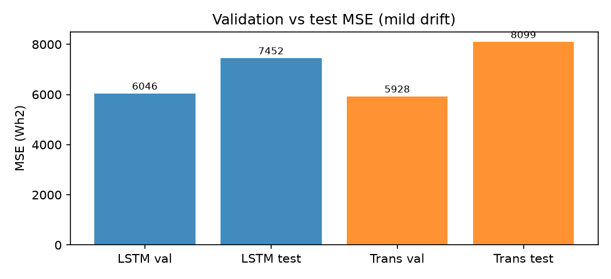
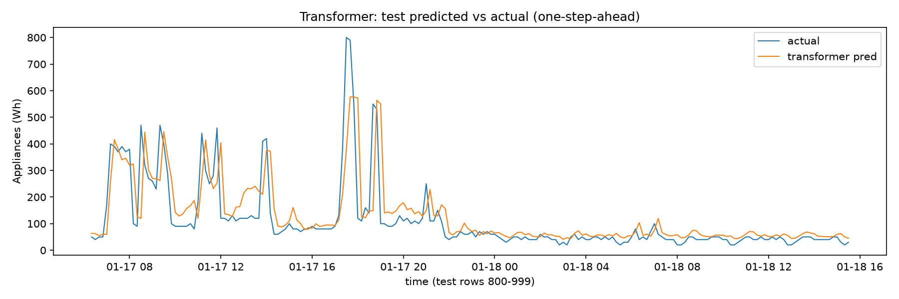

LSTM & Transformer Time-Series Forecasting
1. Objective
Build a leakage-controlled pipeline for one-step-ahead prediction of Appliances energy use, using OpenCode to develop an LSTM. Examine variation across repeated sessions, audit generated suggestions, compare local language-model runs, and evaluate a Transformer under a shared forecasting protocol.
Reference LSTM: test MSE 7,452.4 Wh² on 200 held-out observations, compared with 8,743.0 for persistence. These are the audited assignment results.
2. Dataset
A2_data_release.csv contains 1,000 rows and 29 columns: a timestamp and 28 numeric variables. Observations run from 11 January 2016, 17:00 to 18 January 2016, 15:30 at regular 10-minute intervals, with no missing values or gaps.
- Target:
Appliances, energy use in Wh, with lag-1 autocorrelation approximately 0.77. - Available predictors include lighting, indoor temperature/humidity and outdoor weather.
rv1andrv2are exact duplicates; the reference model ultimately uses pastAppliancesvalues only.- Consumption is strongly right-skewed: median 60 Wh, mean 114.5 Wh and maximum 1,080 Wh.

3. Leakage-Controlled Methodology
The reference run (Session 3, seed 42) uses rows 0–639 for training, 640–799 for validation and 800–999 for testing. Raw observations remain chronological.
- To predict row
t, the model sees only rows[t − L, t). - Validation and test windows borrow immediately preceding history, producing a prediction for every target row without using future observations.
StandardScaleris fitted on training rows only. Metrics are calculated after inverse transformation to the original units.- Features, lookback and architecture are chosen using validation data. Test evaluation occurs once after freezing the choices.
| Setting | Selected value |
|---|---|
| Features | Univariate: Appliances |
| Lookback | 24 steps / 4 hours |
| Architecture | One LSTM layer, 50 units → Dense(1) |
| Optimiser / batch | Adam, learning rate 0.001 / 32 |
| Stopping | Maximum 100 epochs; patience 10; best weights restored |
| Selected training run | 51 epochs; training windows not shuffled |
4. Validation-Based Selection
Stage 1 compared univariate and six-variable inputs with lookbacks of 6, 12 and 24 steps, using a fixed 50-unit LSTM. Stage 2 compared 32 units, 50 units and a two-layer 50-unit model with dropout. The selected univariate, 24-step, one-layer model attained validation MSE 6,045.9 Wh².

The near-tie with a six-step lookback (6,189.0) should not be treated as evidence that 24 steps will always be better.
5. Held-Out Forecasting Results
| Model | MSE (Wh²) | RMSE (Wh) | MAE (Wh) |
|---|---|---|---|
| LSTM | 7,452.4 | 86.3 | 48.9 |
| Persistence: previous observation | 8,743.0 | 93.5 | 39.2 |
| Constant training mean | 17,773.1 | 133.3 | 86.3 |

The LSTM reduces test MSE by approximately 15% relative to persistence. Persistence still has lower MAE, so the improvement depends on the evaluation metric.
6. Repeated OpenCode Sessions
| Session | Features / lookback | Architecture | Test n | Test MSE |
|---|---|---|---|---|
| 1 | 26 variables / 6 steps | 64 units + dropout 0.2 | 300 | 16,935.9 |
| 2 | 10 variables / 12 steps | 50 units + dropout 0.2 | 200 | 13,295.5 |
| 3 (reference) | 1 variable / 24 steps | 50 units | 200 | 7,452.4 |
Session 1 uses an earlier, longer test period (rows 700–999); its MSE is not directly comparable with the other sessions. Session 2 selected candidates using mean validation MSE over seeds 42, 43 and 44. All three beat their training-mean baseline, but only Session 3 beats persistence.
The different feature sets, lookbacks and outcomes show that identical instructions do not uniquely determine an experiment. Session 3 is retained for its fully leakage-controlled reference protocol, not as proof of general superiority.
7. Three Corrections from the Code Audit
| Issue | Correction |
|---|---|
| Early-stopping run length used for refit | Use the best validation epoch: 12 instead of the delayed stopping point at 22. |
| Test windows built only inside the test block | Prepend the final L training observations; evaluate all 300 targets instead of dropping the first six. |
| Single-seed model selection was unstable | Compare mean validation MSE over seeds 42, 43 and 44; report near-ties rather than overstate a winner. |
These corrections concern experimental validity and reproducibility, rather than tuning predictions against the test set.
8. Local Language-Model Comparison
The assignment compared phi4-mini and qwen3:4b at 8K context on an Apple M1 with 8 GB memory, using the same basic prompt. These are the original Assignment 2 runs.
| Run | Recorded time | Observed outcome |
|---|---|---|
| phi4-mini | 117.4 s | Unexecuted code; placeholder target Y; full-data scaling; no validation split; invalid windowing/input shape. |
| qwen3:4b | 477.3 s | No executable code, data inspection or metrics; role/tool-use confusion. |
Neither run yielded an executed, leakage-free result, so there is no valid test-MSE comparison with the reference LSTM. One run per model does not establish a general capability ranking.
9. Transformer Comparison
A Transformer was selected independently on the same 640/160/200 chronological split, with identical target alignment, train-only scaling and baselines. Its staged validation search covered feature sets, lookback, capacity, batch order and learning rate.
| Setting / metric | Reference LSTM | Transformer |
|---|---|---|
| Inputs / lookback | Univariate / 24 | Univariate / 24 |
| Architecture | 1 × LSTM-50 | 1 encoder layer; d32, 2 heads, FF64; dropout 0.1 |
| Training budget | Patience 10 / max 100 epochs | Patience 20 / max 300 epochs |
| Validation MSE | 6,045.9 | 5,927.6 |
| Test MSE | 7,452.4 | 8,098.8 |
| Test RMSE / MAE | 86.3 / 48.9 | 90.0 / 47.7 |



The Transformer improves MSE over persistence by approximately 7%, but has higher MAE than persistence. Training budgets differ, each final comparison uses one seed, and the staged search is not exhaustive; these results do not establish architectural superiority.
10. Generalized Prompt and Limitations
The final prompt uses Role, Input, Steps and Expectation. It generalises row counts, dates and lookbacks while keeping the experimental safeguards explicit.
Read the generalized forecasting prompt
- One-step-ahead prediction uses observed history, not a recursive multi-step rollout.
- Only one short time period is studied; stationarity and transfer to other periods remain uncertain.
- Reusing validation for stopping and selection may introduce mild optimism.
- Small validation sets, stochastic training and limited search budgets make nearby rankings uncertain.
Conclusion: the reference LSTM improves squared error over persistence, while the repeated runs and audits show why chronology, scaling, boundary history and validation-based selection must be checked explicitly.